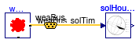
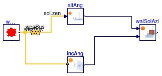
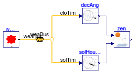

Collection of models that illustrate model use and test models
This package contains examples for the use of models that can be found in Buildings.BoundaryConditions.SolarGeometry.BaseClasses.
Extends from Modelica.Icons.ExamplesPackage (Icon for packages containing runnable examples).
| Name | Description |
|---|---|
| Test model for altitude angle | |
| Test model for declination | |
| IncidenceAngle | Test model for incidence angle |
| SolarAzimuth | Test model for zenith angle |
| SolarHourAngle | Test model for solar hour angle |
| WallSolarAzimuth | Test model for wall solar azimuth angle |
| Test model for zenith angle |
 Buildings.BoundaryConditions.SolarGeometry.BaseClasses.Examples.AltitudeAngle
Buildings.BoundaryConditions.SolarGeometry.BaseClasses.Examples.AltitudeAngle
Test model for altitude angle
This example calculates the altitude angle of the sun at a given time. The altitude angle is the angle between the sun ray and the projection of the ray on a horizontal surface.
Components used in this model are:
Extends from Modelica.Icons.Example (Icon for runnable examples).
| Type | Name | Description |
|---|---|---|
| Bus | weaBus | Weather bus |
 Buildings.BoundaryConditions.SolarGeometry.BaseClasses.Examples.Declination
Buildings.BoundaryConditions.SolarGeometry.BaseClasses.Examples.Declination
Test model for declination
This component computes the solar declination, which is the angle between the equatorial plane and the solar beam.
Extends from Modelica.Icons.Example (Icon for runnable examples).
Test model for incidence angle
This example computes the solar incidence angle on a tilted surface. This model is also part of more extensive tests that run the model for different orientations. These tests are at Buildings.BoundaryConditions.SolarGeometry.Examples.IncidenceAngle.
Extends from Modelica.Icons.Example (Icon for runnable examples).
| Type | Name | Description |
|---|---|---|
| Bus | weaBus | Weather bus |
Test model for zenith angle

This example computes the solar azimuth angle.
Extends from Modelica.Icons.Example (Icon for runnable examples).
| Type | Name | Default | Description |
|---|---|---|---|
| Angle | lat | 41.98*Modelica.Constants.pi/... | Latitude [rad] |
| Type | Name | Description |
|---|---|---|
| Bus | weaBus | Weather bus |
Test model for solar hour angle

This example computes the solar hour angle, which is defined as the angle between the circle that passes through an observer, the north pole and the south pole, and the circle that passes through the sun, the north and the south pole.
Extends from Modelica.Icons.Example (Icon for runnable examples).
| Type | Name | Description |
|---|---|---|
| Bus | weaBus | Weather bus |
 Buildings.BoundaryConditions.SolarGeometry.BaseClasses.Examples.WallSolarAzimuth
Buildings.BoundaryConditions.SolarGeometry.BaseClasses.Examples.WallSolarAzimuth
Test model for wall solar azimuth angle

This example calculates the wall solar azimuth angle.
Extends from Modelica.Icons.Example (Icon for runnable examples).
| Type | Name | Default | Description |
|---|---|---|---|
| Angle | lat | 41.98*Modelica.Constants.pi/... | Latitude [rad] |
| Type | Name | Description |
|---|---|---|
| Bus | weaBus | Weather bus |
Test model for zenith angle

This example computes the zenith angle, which is the angle between the earth surface normal and the sun's beam.
Extends from Modelica.Icons.Example (Icon for runnable examples).
| Type | Name | Description |
|---|---|---|
| Bus | weaBus | Weather bus |